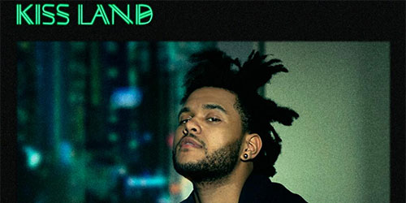

News
+ Beyonce Releases Surprise "Visual Album" |
|---|

Top Picks
|
|---|

Albums of 2013
|
|---|


The Weeknd - Kissland
Think about how some other male R&B artists might have worked with a title like "Kiss Land": in the hands of R. Kelly, perhaps it becomes his latest conceptual dramedy, an inset of the geography surveyed on “Sex Planet”. For Robin Thicke, it could serve as more proof of his insatiable need to be liked and his utter inability to look cool. Like The 20/20 Experience, the name Kiss Land brings to mind a family-friendly theme park overseen by pop music’s most tireless crowd pleaser. And if Miguel made a song called “Kiss Land”, it could be delivered with a wink, total sincerity, or, most likely, some combination thereof. But it's the name of the Weeknd’s first true major-label release, and the title track boasts characteristically lecherous lines like "not really into kisses leading into nothing." As such, Kiss Land scans as unintentionally hilarious, a sign that the project is rushing headlong into self-parody and Abel Tesfaye seems to be the only one who doesn’t realize it.
Given that, it makes sense that Tesfaye has followed up Trilogy, a compilation of his highly influential and gripping 2011 mixtapes, with the rock'n'roll trope that results from ego and self-awareness becoming inversely proportional: a concept album about “life on the road." I could tell you that Kiss Land is dolorous, hook-averse, emotionally despondent, and says appalling things to women 85% of the time, but that was also true of Trilogy. Thing is, the earlier material also had some indelible melodies (mostly on House of Balloons), innovative textures (mostly on Thursday), and all-consuming atmosphere (mostly on Echoes of Silence). Kiss Land does manage some of the latter two qualities, but to seriously diminishing returns.